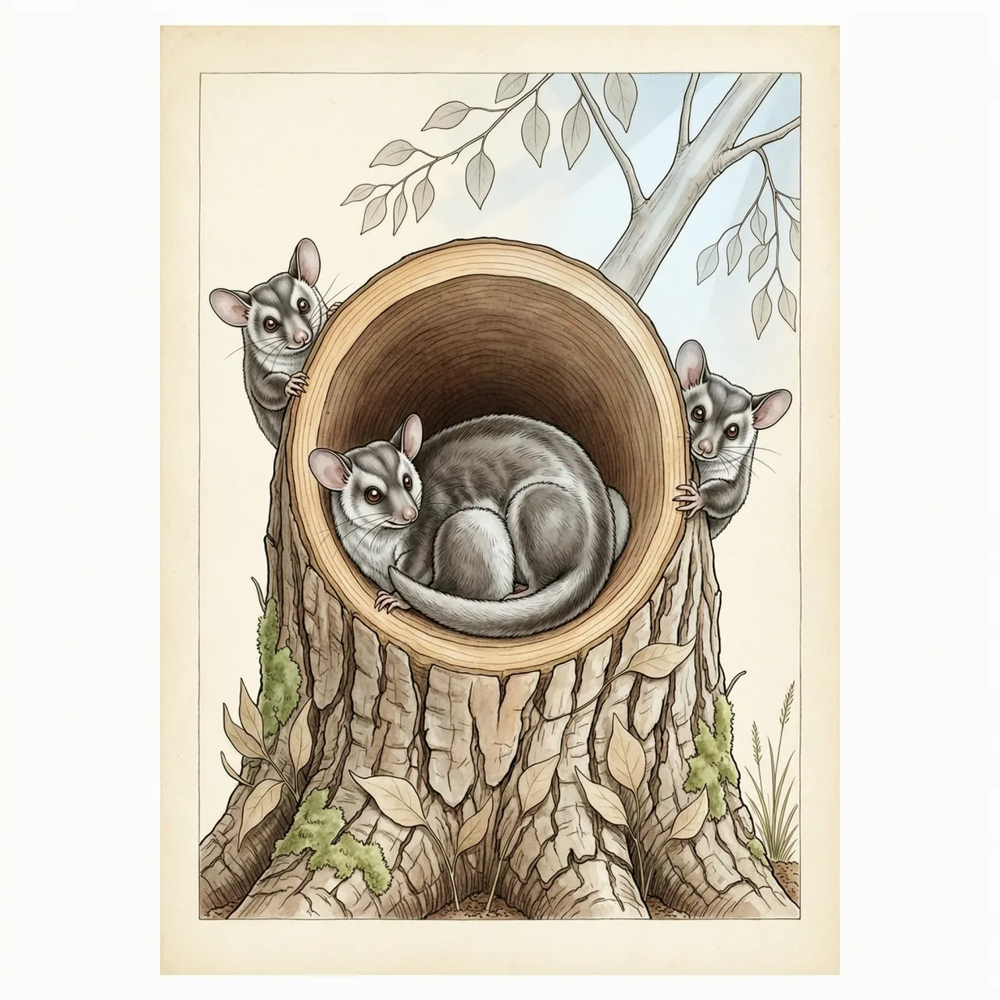
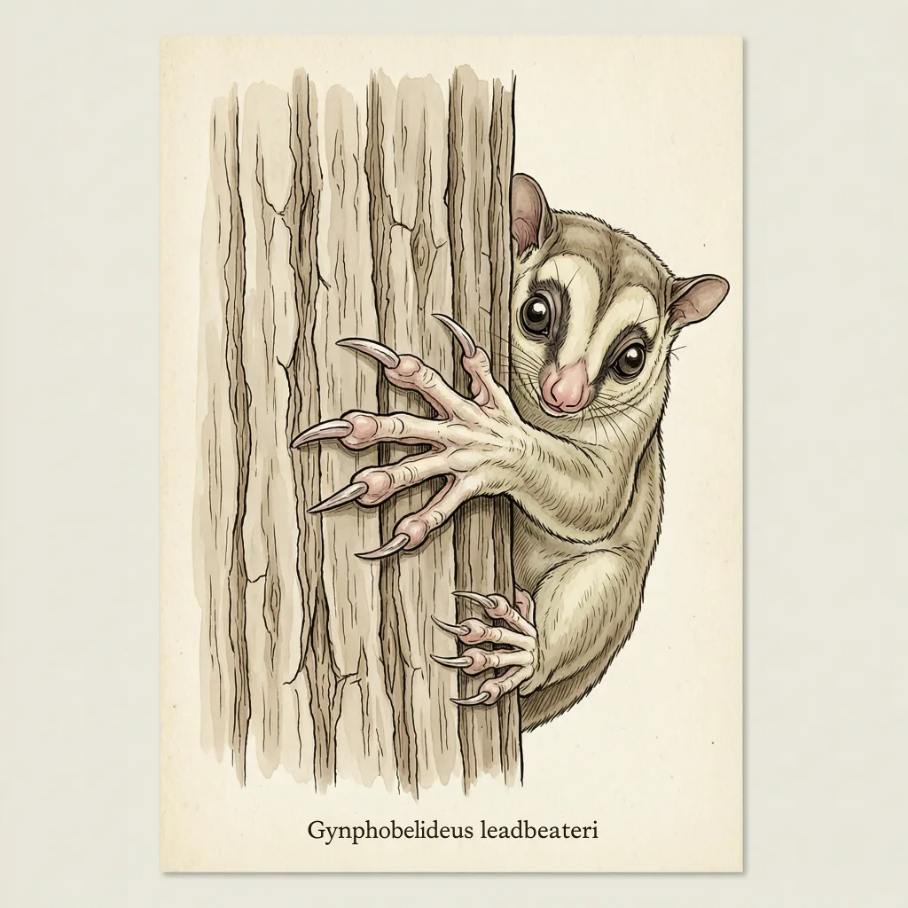

利氏袋鼯是澳大利亚维多利亚州的特有小型有袋动物，筑巢依赖山桉老林的天然树洞，寒夜里一群挤抱在一起共享体温。林火与老树倒下让它的栖息地被切碎——即便山坡重新长满年轻的桉树，够老的树洞仍遥遥无期，它在 IUCN 红色名录中已是极危。
想找到利氏袋鼯，得先在维多利亚州的山桉老林里找到一棵够老的树：树干上有洞，洞里多半正住着它。利氏袋鼯是维多利亚州的特有种，分布范围窄，筑巢几乎完全依赖山桉老林的天然树洞——林子可以再密，只要树还没老到出洞，利氏袋鼯就没有安家的地方。
维多利亚州山里的寒夜不好熬，利氏袋鼯的办法是挤在一起。夜里，一群利氏袋鼯叠压着缩进同一个树洞，身体彼此贴住。单个小身体存不住多少热量，挤作一团后散热变慢，洞里的温度便够撑过最冷的那几个小时。对利氏袋鼯来说，树洞既是卧室，也是过冬时唯一的热源。
反直觉的是，即便山桉重新长满山坡，利氏袋鼯也不一定能回来——它要的不是树，而是树洞。树洞得等一棵山桉老到空心，动辄上百年。林火烧过、老树倒下之后，年轻的林子再密也无洞可住，栖息地碎成孤岛，各群体之间也难有往来。IUCN 红色名录把利氏袋鼯列为极危，它的存亡系于还剩下多少棵没倒的百年山桉。
